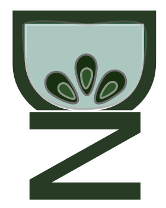

<!DOCTYPE html>
<html>
<head>
  
        <link rel="stylesheet" href="https://stackpath.bootstrapcdn.com/bootstrap/4.3.1/css/bootstrap.min.css" integrity="sha384-ggOyR0iXCbMQv3Xipma34MD+dH/1fQ784/j6cY/iJTQUOhcWr7x9JvoRxT2MZw1T" crossorigin="anonymous">
        <script src="https://stackpath.bootstrapcdn.com/bootstrap/4.3.1/js/bootstrap.min.js" integrity="sha384-JjSmVgyd0p3pXB1rRibZUAYoIIy6OrQ6VrjIEaFf/nJGzIxFDsf4x0xIM+B07jRM" crossorigin="anonymous"></script>

        <title>BeeFriendly</title>
        <link href="https://fonts.googleapis.com/css?family=Muli&display=swap" rel="stylesheet">
        <link href="https://fonts.googleapis.com/css?family=Russo+One&display=swap" rel="stylesheet">
        <link href="css/style.css" rel="stylesheet" type="text/css">
        <link href="css/style_bee.css" rel="stylesheet" type="text/css">
        <link rel="stylesheet" href="css/footer-distributed-with-search.css">
        <link rel="stylesheet" href="https://cdnjs.cloudflare.com/ajax/libs/font-awesome/4.7.0/css/font-awesome.min.css">
        <link href="https://fonts.googleapis.com/css?family=Bungee+Outline&display=swap" rel="stylesheet">
        <link href="https://fonts.googleapis.com/css?family=Bungee+Outline|Fredoka+One&display=swap" rel="stylesheet">
        <link href="https://fonts.googleapis.com/css?family=Alegreya+Sans+SC:400,700&display=swap" rel="stylesheet">

        <link rel="icon" href="images/newlogoshadow.png">
    </head>
    </html>

     <!-- Paste Navigation Code Below -->

     <nav class="navcolor navbar navbar-expand-lg navbar-light bg-light" style="background: white;">
            <button class="navbar-toggler" type="button" style="background-color: white;" data-toggle="collapse" data-target="#navbarTogglerDemo03" aria-controls="navbarTogglerDemo03" aria-expanded="false" aria-label="Toggle navigation">
              <span class="navbar-toggler-icon"></span>
            </button>
            <a class="navbar-brand" href="index.html"> 
                
            </a>
          
            <div class="collapse navbar-collapse" id="navbarTogglerDemo03" style="color: white;">
              <ul class="navbar-nav mt-2 mt-lg-0 customNav">
                <li class="nav-item">
                  <a class="nav-link" style="color: rgb(23, 92, 73);" href="index.html#aboutmetitle">About me <span class="sr-only">(current)</span></a>
                </li>
                <li class="nav-item">
                  <a class="nav-link" style="color: rgb(23, 92, 73);"   href="index.html#myworks_title">My works</a>
                </li>
                <li class="nav-item link_color">
                  <a class="nav-link" style="color: rgb(23, 92, 73);"  href="index.html#touch_title" tabindex="-1" aria-disabled="true">Contacts</a>
                </li>
              </ul>
            </div>
          </nav>
 
 

          <div class="parallax0"></div>
  <!-- Main part of page         -->

<!-- <h2 id="beeheader">BeeFriendly: non-profit website design <br>and frontend development project.</h2> -->

<div class="bee">
           
        
        </div>

<div class="bee1">
   

</div>

<div class="bee2">
           
        
        </div>


<div class="aboutbees">

<p class="fff">BeeFriendly: non-profit environmental organization</p>
<p class="fff2">Website design and frontend development project</p>

<div class="lining"></div>
<div class="lining2"></div>
<div class="work_fff">
        <p id="myrole"> 
                GROUP PROJECT <br><br>
                <span class="group">Role:</span> UX/UI Designer , FrontEnd Developer<br><br>
                <span class="group">Timeline:</span> 3 weeks
            </p>


<p id="overview"><span class="group2">PROBLEM:</span><br> <br>The honey bee population is in decline and that spells doom for the future of the environment because the honey bees are the 3rd most important livestock according to the USDA. Their role in pollination of fruits and vegetables is crucial to the continuation of produce as we know it today. Our user is concerned about their understanding of their role in supporting the bee population and desires a good and local organization to help her do her part. <br>
</p>

<p id="problem_top">
<span class="group2">SOLUTION:</span><br> <br>A good organization with lots of information about honey bees and their importance that is transparent and available for everyone to access via a quality web presence. The organization's website should be inviting, professional, and credible for engaging people of different ages and interests. The goal is to educate, engage people and develop a strong community.
          
</p> 

</div>
</div>


<div class="post-container">                
        <p class="mission">OUR MISSION</p>
    
        <p class="mission2">
            Most people have no idea how important bees are to our survival on this planet. <br><br>Then there are those who do know the importance of bees but lack the knowledge and guidance about how to coexist with bees.<br> <br>And the simple things we can all do to share our environment safely with these darling little creatures.<br> <br>Our Mission is simple, we focus on sanctuary, community outreach, and education to positively affect bee populations of Orange County in a meaningful way.</p>


         </div>

         <div class="parallax"></div>

<div class="einstein">

<p class="words">
    
        "If the bee disappeared off the face of the Earth, <br>man would only have four years left to live".
        <br><br>
        <span id="albert">Albert Einstein</span> 
        <br>
</p>


</div>


<div class="survey">

  <p class="mission">RESEARCH & SURVEYS</p>


  <p class="mission2">
    Goal: To discover how potential users feel about bees, their importance to the world, and if they are a cause that is worth supporting.
<br> <br> <br>
    “Bees are the main medium for plant pollination and are essential for wild plants and crops.”
<br> <br><br>
“They're pollinators and they've been here longer than us.”
    </p>

       

</div>

<div class="competitor">
   

</div>


<div class="matrix-text">
        <p class="feature">FEATURE PRIORITIZATION</p>
        <p class="matrix-words">
             After organizing ideas and data we came up with the priority items to be put into our website that would correspond to high impact to the user and low cost to implement.
                <br>
                <br>
        </p>
        
        
        </div>


<div class="matrix">
           
        
        </div>


<div class="user-title">
    <p class="persona">USER PERSONA</p>
    <p class="persona-words">
 The typical user of our website is a person who cares about the environment, is active and tries to get more knowledge or help others. <br>
Their goals are to spread the information about bees population decline in the world and engage more people, especially in Orange County, to help prevent this issue.
            <br>
            <br>
    </p>
    
    
    </div>


<div class="user-image">
       
    
    </div>


<div class="sitemap-title">
    <p class="sitemap">SITEMAP</p>
    <p class="sitemap-words">
Our Sitemap is a representation of the most important sections of the website for our user.<br>
They can be divided in such groups as: <br>
- Information about bees<br>
- Bees education for kids and adults<br>
- Help and support of bees population
            <br>
            <br>
    </p>
    
    
    </div>


<div class="sitemap-image">
       
    
    </div>


<div class="flow-title">
        <p class="userflow">USERFLOW</p>
        <p class="sitemap-words">
We present three main user flows that will help to understand how the user can navigate through the website.
                <br>
                <br>
        </p>
                
        </div>
    
    <div class="flow-image">
           
        
        </div>

<div class="parallax01"></div>

<div class="flow-title">
        <p class="userflow">SKETCHES</p>
        <p class="sitemap-words">
First sketches of the main pages.<br>
Created using InVision Freehand.
                <br>
                <br>
        </p>
                
        </div>
    
    </div>

    <div class="sketches">
       
    
    </div>
                
<div class="color-title">
        <p class="color-proto">MOBILE PROTOTYPING</p>
        <p class="color-words">
    Our website is built to be fully responsive.<br>
    We created mobile version prototypes to design responsiveness and create media-queries based on them.
                <br>
                <br>
        </p>
                
        </div>
    
    </div>
    
    <div class="color-prototype">
       
    
    </div>
    

    
<div class="flow-title">
    <p class="userflow">STYLEGUIDE</p>
    <p class="sitemap-words">
We used colors associated with the bee environment - yellow, orange, black and green nature color.<br>
As well we used Nunito Sans that is friendly, easy to read font.
            <br>
            <br>
    </p>
            
    </div>

</div>

<div class="sketches1">
   

</div>


<div class="color-title">
        <p class="color-proto">Hi-Fi PROTOTYPING</p>
        <p class="color-words">
    First High Fidelity prototypes that changed a bit to the end of the project.
                <br>
                <br>
        </p>
                
        </div>
    
    </div>
    
    <div class="color-prototype">
       
    
    </div>


<div class="parallax02"></div>


<div class="iteration">
        <p class="iteration-title">ITERATION PROCESS</p>
        <p class="iteration-words">
    First High Fidelity prototypes that changed a bit to the end of the project.
                <br>
                <br>
        </p>
                
        </div>
    
    </div>
    
    <div class="iteration-div-img">
       
    
    </div>

    <div id="register"> 
        <div id="around">
        <p id="aboutsite">
            Our team created pages that users would visit in the first turn, based on the research.<br>
            Few pages are still under contruction.<br>
            Thanks for your interest in this matter!
            Please, check the live website below.
        </p>
   
    
            <a id="go" href="https://dykunnata.github.io/beefriendly/index.html"> 
            <button class="button button1">GO TO WEBSITE</button>
            </a>
        </div>
    </div>
    <div class="nextsteps">
            <p class="next-title">WHAT'S TO IMPROVE?</p>
            <p class="next-words">
        Many things can be improved, but the most prominent and important are listed in the following block.
                    <br>
                    <br>
            </p>
                    
            </div>
        
        </div>
        
        <div class="next-img">
           
        
        </div>


<div class="thanks">THANK YOU!</div>

        <div class="footer">
            <p>Nataliia Dykun @2019<br>
            </p>
        </div>

<!-- Return to Top -->
<a href="javascript:" id="return-to-top"><i class="icon-chevron-up">^</i></a>


<!-- ICON NEEDS FONT AWESOME FOR CHEVRON UP ICON -->
<!-- <link href="//netdna.bootstrapcdn.com/font-awesome/3.2.1/css/font-awesome.css" rel="stylesheet"> -->

  
<!-- Test the scroll -->
<div>

  <i class="icon-arrow-down"></i>
  
</div>


        
        <script src="https://code.jquery.com/jquery-3.3.1.slim.min.js" integrity="sha384-q8i/X+965DzO0rT7abK41JStQIAqVgRVzpbzo5smXKp4YfRvH+8abtTE1Pi6jizo" crossorigin="anonymous"></script>
        <script src="https://cdnjs.cloudflare.com/ajax/libs/popper.js/1.14.7/umd/popper.min.js" integrity="sha384-UO2eT0CpHqdSJQ6hJty5KVphtPhzWj9WO1clHTMGa3JDZwrnQq4sF86dIHNDz0W1" crossorigin="anonymous"></script>
        <script src="https://stackpath.bootstrapcdn.com/bootstrap/4.3.1/js/bootstrap.min.js" integrity="sha384-JjSmVgyd0p3pXB1rRibZUAYoIIy6OrQ6VrjIEaFf/nJGzIxFDsf4x0xIM+B07jRM" crossorigin="anonymous"></script>
        <script src="https://ajax.googleapis.com/ajax/libs/jquery/3.4.1/jquery.min.js"></script>
        <script src="code.js">
        </script>
                    </body>  
                </div>